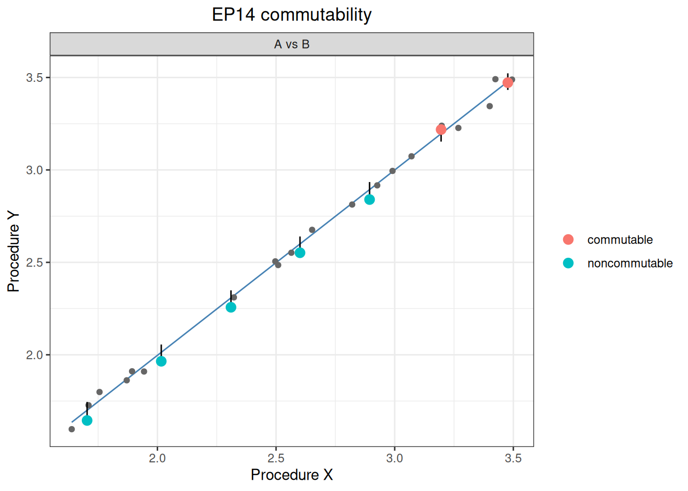
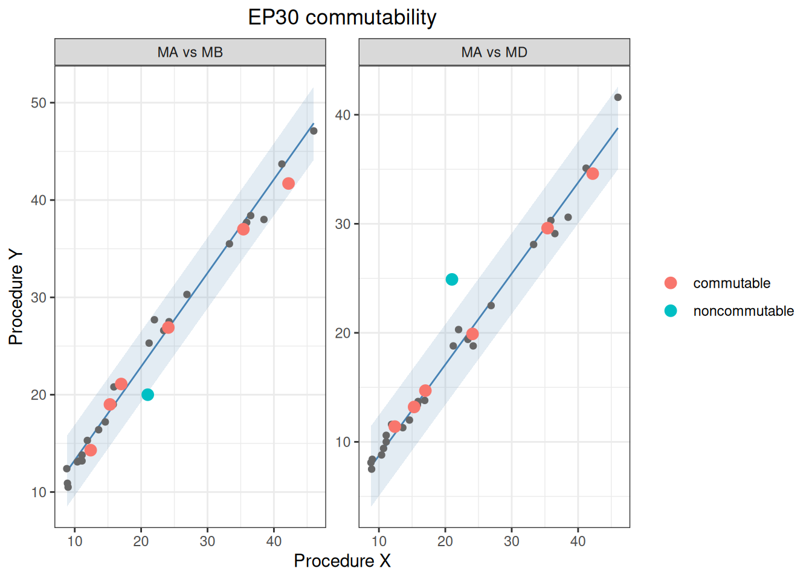
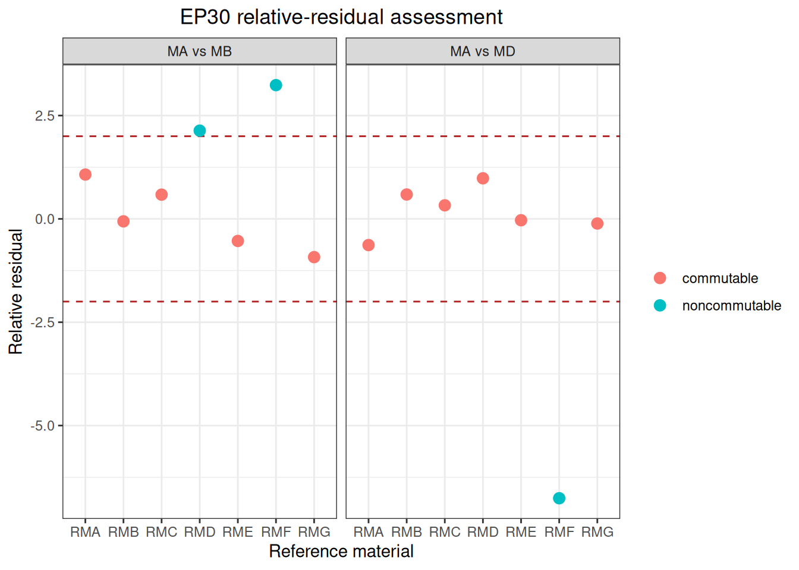

代码
library(ivdtools)
library(readr)本文演示如何使用 ivdtools 包评价参考物质在不同测量程序之间是否具有与天然临床样品一致的数值关系。内容覆盖 CLSI EP14-A3、CLSI EP30-A、IFCC Part 2 和 IFCC Part 3（calibration）四条分析路径，并使用标准原始数据逐项核对计算结果。
本文中的标准案例用于说明方法并核对统计计算，不替代标准规定的样本来源、实验设计、运行顺序、随机化、试剂批次、质量控制和记录要求。commutability() 返回的设计检查也不能代替使用者对研究是否符合所选标准作出判断。
EP14 和 EP30 的预测区间评价的是参考物质与临床样品测量关系的统计相容性，不是医学允许误差。IFCC 路径使用的互换性准则必须在分析前规定，不能从观察结果反推。外推、无法评价和不确定（inconclusive）结果应单独报告；结论仅适用于所研究的参考物质、测量程序、分析尺度、浓度范围和实验条件。
基质效应是样品中非目标组分对某一测量程序响应的影响；互换性关注的则是参考物质在两个或多个测量程序之间的数值关系，是否与具有代表性的临床样品一致。因此，某种材料不能脱离具体测量程序、浓度范围和使用目的被笼统地称为“互换”或“非互换”。
四条路径回答的问题和判定单位并不相同：
| 分析路径 | 主要问题 | 判定单位 | 主要结果 |
|---|---|---|---|
| CLSI EP14-A3 | 处理样品是否遵循临床样品的程序间关系 | 程序对 × 参考物质 | Deming 预测区间与分类 |
| CLSI EP30-A | 参考物质是否适用于一组测量程序 | 程序对 × 参考物质 | 预测区间、相对残差与 RMF 对照 |
| IFCC Part 2 | 参考物质偏倚与临床样品偏倚之差是否可接受 | 程序对 × 参考物质 | 偏倚差、不确定度与三分类结论 |
| IFCC Part 3 | 参考物质重新校准能否降低程序间结果差异 | 程序集合 | 校准前后偏倚、IMPBR 与调查诊断 |
选择分析路径时，应以研究目的、实验设计和预先规定的判定规则为依据。同一组数据不应仅因为某条路径给出更有利的结论而改变方法。
library(ivdtools)
library(readr)| 函数 | 主要用途 |
|---|---|
commutability() |
按 EP14、EP30、IFCC Part 2 或 IFCC Part 3 路径评价互换性 |
print() |
概览分析路径、程序对、设计检查和主要结论 |
summary() |
展开未满足的设计建议、无法分析的程序对及详细结果 |
plot() |
绘制临床样品关系、参考物质位置和相应判定边界 |
commutability() 使用长格式重复测量数据，一次调用可以评价一个指定程序对、以某个程序为参考的多个程序对，或数据中的全部两两组合。
除 calibration 路径外，每行表示某份临床样品或参考物质在一个测量程序下的一次测量。临床样品和参考物质应使用一致的程序标识、结果单位和分析尺度。
| 字段 | 含义 |
|---|---|
| sample_id | 临床样品或参考物质编号 |
| material_type | 材料类别；calibration 路径不需要该字段 |
| procedure | 测量程序名称 |
| result | 单次测量结果 |
| position | IFCC Part 2 中参考物质在运行序列中的位置 |
| calibration_stage | calibration 路径中的 before 或 after |
material_type 自动将 clinical、patient 和 native 识别为临床样品，将 rm 和 reference_material 识别为参考物质，字符大小写不影响识别。其他编码应通过命名字符向量显式映射：
type_map <- c(
"patient sample" = "clinical",
"candidate RM" = "rm"
)
result <- commutability(
data,
sample_id = "sample_id",
material_type = "sample_type",
procedure = "procedure",
result = "result",
approach = "ep14",
material_type_map = type_map
)提供 material_type_map 时，函数完全按该映射处理；未提供时才使用内置自动识别。若存在无法识别的类别，函数列出原始值并提示提供映射，不会将未知材料默认归入某一类。
列参数使用列名字符串，例如：
result <- commutability(
data,
sample_id = "sample_id",
material_type = "material_type",
procedure = "procedure",
result = "result",
approach = "ep14"
)标准中的样品数量、重复次数、运行位置和程序数量属于研究设计要求或建议，应由使用者在实施和报告阶段主动核对。函数将这些内容保存在 design_checks 中；未满足某项设计检查并不会自动否定仍可计算的统计结果，也不会替使用者宣布研究符合标准。
代码只对完成计算所必需的条件进行验证，例如必需字段、有限数值、可配对的临床样品和参考物质，以及对应方法所需的方差或位置数据。某个程序对无法计算时，原因保存在 analysis_errors；其他可计算的程序对仍可返回。正式分析应同时审阅结果、design_checks 和 analysis_errors。
设置 approach = "ep14" 后，函数由临床样品重复结果估计两个程序的重复性方差及方差比
\[\lambda=\frac{s_Y^2}{s_X^2},\]
再拟合 Deming 关系 \(\hat{Y}=\hat{\alpha}+\hat{\beta}X\)。函数在每份参考物质的程序 X 均值处计算预测值、预测标准误和预测区间，并比较程序 Y 的实测均值。常用输出包括 variance_x、variance_y、lambda、intercept、 slope、 predicted_y、prediction_se、lower、upper、extrapolated 和 classification。
extrapolated = TRUE 表示参考物质超出临床样品建模范围。函数仍给出数值，但外推结果不应与范围内结果等同解释。
设置 approach = "ep30" 后，函数按 EP30-A 附录 C 传播回归截距、斜率、二者协方差和参考物质重复测量误差，形成参考物质预测区间。rm_set_size 表示作为相关集合共同使用的参考物质数量；彼此独立使用时设为 1。
结果还包括残差标准差 syx、相对残差 relative_residual 及其分类。预测区间与相对残差是两项并列评价，不能用一项替代另一项。参考物质在任一程序上超出临床样品范围时，函数保留计算值，但标准分类标记为 not_evaluable。
设置 approach = "ifcc" 后，必须提供 position 和预先规定的 criterion。bias_model 可选择整个范围的恒定偏倚、局部恒定偏倚或局部线性偏倚：
| 模型 | 解释 |
|---|---|
| constant_global | 整个浓度范围使用一个临床样品偏倚估计 |
| constant_local | 在每个参考物质附近估计局部恒定偏倚 |
| linear_local | 在参考物质两侧选取临床样品并估计局部线性偏倚 |
参考物质偏倚与临床样品偏倚之差为
\[D_{RM}=B_{RM}-B_{CS}.\]
其标准不确定度和扩展不确定度为
\[u(D_{RM})=\sqrt{u(B_{RM})^2+u(B_{CS})^2}, \qquad U(D_{RM})=k\,u(D_{RM}).\]
若区间 \(D_{RM}\pm U(D_{RM})\) 完全位于预设准则 \([-C,C]\) 内，则分类为互换；完全位于准则区间外，则分类为非互换；与边界重叠时为不确定。
rm_position = "pooled" 按 IFCC Part 2 官方工作簿在每个程序内跨参考物质合并位置均值方差，是默认设置；rm_position = "material_specific" 保留按单个参考物质估计位置变异的兼容模式。
results 同时保存 rm_standard_uncertainty、clinical_standard_uncertainty、standard_uncertainty 和 expanded_uncertainty；position_diagnostics 保存每个参考物质的位置数、位置自由度、位置均值标准差及合并结果。
设置 approach = "calibration" 后，不再逐一评价程序对，而是用校准前多个程序结果的截尾均值建立每份临床样品的固定初始靶值，再比较各程序校准前后的中位百分偏倚。程序间最大偏倚范围为
\[IMPBR=\max_p(B_p)-\min_p(B_p).\]
该路径必须提供 calibration_stage 和预先规定的百分比 criterion。results 保存校准前后的中位百分偏倚、SD、W(3)、调整后 W(3) 和浓度趋势；diagnostics 保存完整程序集合及显式排除后的 IMPBR；sample_results 保存逐样品偏倚；leave_one_out 仅用于敏感性调查，不会据此自动排除程序。校准后 IMPBR 超过准则时，应调查参考物质互换性、校准模型、测量不精密度和样品特异性干扰。
EP14 支持 raw 和 log10；EP30 支持 raw、log10 和 ln；IFCC Part 2 支持 raw 和 ln；calibration 只接受 raw。对数变换作用于每条重复结果，再进行样品汇总，因此原始结果必须为正数。分析尺度应在查看结果前确定，并在报告中明确说明。
不指定程序对时，函数评价所有两两组合；也可以指定参考程序或明确的程序对：
reference_result <- commutability(
data, "sample_id", "material_type", "procedure", "result",
reference_procedure = "MP1", approach = "ep14"
)
selected_result <- commutability(
data, "sample_id", "material_type", "procedure", "result",
procedure_pairs = list(c("MP1", "MP2")), approach = "ep14"
)commutability() 返回 commutability_result 对象。EP14、EP30 和 IFCC Part 2 的 results 以“程序对 × 参考物质”为单位；EP14 和 EP30 的模型保存在 models，EP30 的连续预测区间保存在 prediction_grid，IFCC Part 2 的诊断信息保存在 diagnostics 和 position_diagnostics。calibration 按“程序 × 校准阶段”返回结果，并另存 sample_results、diagnostics 和 leave_one_out。
建议先用 print() 查看整体状态，再用 summary() 审阅设计检查和无法分析的程序对，最后结合 results、诊断表和图形形成报告。正式报告还应保存样品选择、排除记录、重复次数、运行位置、程序方向、分析尺度、预设准则、覆盖因子和软件版本。统计分类不等同于参考物质定值确认、计量溯源确认或产品性能合格判定。
附录 C Example C1 包含 20 份患者样品和 5 份处理样品，两个程序均进行 3 次重复测量，测量项目为胆固醇，单位为 mg/dL。原文 Table C1 将最后两份处理样品都标记为 “d”；数据文件以运行顺序命名为 d_run16 和 d_run07，只为保持材料身份唯一，不改变任何测量值。
ep14_c1_data <- read_csv(
"./data/006-基质效应与互换性/std-ep14-appendix-c1.csv",
show_col_types = FALSE
)
head(ep14_c1_data, 6)# A tibble: 6 × 7
sample_id material_type run_order procedure replicate result position
<chr> <chr> <dbl> <chr> <dbl> <dbl> <lgl>
1 CS01 clinical 21 A 1 206. NA
2 CS01 clinical 21 A 2 213. NA
3 CS01 clinical 21 A 3 205. NA
4 CS01 clinical 21 B 1 217. NA
5 CS01 clinical 21 B 2 209. NA
6 CS01 clinical 21 B 3 220. NA ep14_c1 <- commutability(
ep14_c1_data,
sample_id = "sample_id",
material_type = "material_type",
procedure = "procedure",
result = "result",
approach = "ep14",
scale = "raw",
procedure_pairs = list(c("A", "B")),
conf.level = 0.95
)
ep14_c1
Commutability assessment
Study-design checks: 2 met, 0 unmet. Unmet checks do not invalidate computations; inspect '$design_checks'.
Approach : EP14
Scale : raw
Procedure pairs : 1
Reference materials : 5
Procedure pair: A vs B | Reference material: a
Mean X : 108.86
Mean Y : 110.15
Predicted Y : 117.19384
Residual : -7.0438387
Prediction SE : 3.9893651
Lower : 109.13103
Upper : 125.25665
Extrapolated : FALSE
Classification : commutable
procedure_x : A
procedure_y : B
Procedure pair: A vs B | Reference material: b
Mean X : 123.12333
Mean Y : 136.95
Predicted Y : 132.71701
Residual : 4.2329936
Prediction SE : 3.9111051
Lower : 124.81237
Upper : 140.62164
Extrapolated : FALSE
Classification : commutable
procedure_x : A
procedure_y : B
Procedure pair: A vs B | Reference material: c
Mean X : 146.95
Mean Y : 175.36667
Predicted Y : 158.64821
Residual : 16.718461
Prediction SE : 3.8114445
Lower : 150.94499
Upper : 166.35142
Extrapolated : FALSE
Classification : noncommutable
procedure_x : A
procedure_y : B
Procedure pair: A vs B | Reference material: d_run16
Mean X : 198.44
Mean Y : 215.98333
Predicted Y : 214.68615
Residual : 1.2971814
Prediction SE : 3.740138
Lower : 207.12705
Upper : 222.24525
Extrapolated : FALSE
Classification : commutable
procedure_x : A
procedure_y : B
Procedure pair: A vs B | Reference material: d_run07
Mean X : 222.31667
Mean Y : 244.06667
Predicted Y : 240.67177
Residual : 3.3948989
Prediction SE : 3.7763512
Lower : 233.03948
Upper : 248.30406
Extrapolated : FALSE
Classification : commutable
procedure_x : A
procedure_y : Bplot(ep14_c1)
标准原文还在 \(X=145.0\) mg/dL 处给出预测值和预测区间。以下使用 commutability() 返回的模型、临床样品均值和重复性方差，在相同参考点计算这些量。
| 标准位置 | 统计量 | 标准结果 | ivdtools结果 |
|---|---|---|---|
| EP14 C1 | variance_x | 15.060 | 15.062097 |
| EP14 C1 | variance_y | 22.080 | 22.077815 |
| EP14 C1 | lambda | 1.466 | 1.465786 |
| EP14 C1 | slope | 1.088 | 1.088327 |
| EP14 C1 | intercept | -1.282 | -1.281415 |
| EP14 C1 | prediction_at_x_145 | 156.500 | 156.525969 |
| EP14 C1 | prediction_se_at_x_145 | 3.820 | 3.818079 |
| EP14 C1 | lower_at_x_145 | 148.800 | 148.809344 |
| EP14 C1 | upper_at_x_145 | 164.200 | 164.242593 |
| EP14 C1 | noncommutable_count | 1.000 | 1.000000 |
| rm | mean_x | mean_y | predicted_y | lower | upper | extrapolated | classification |
|---|---|---|---|---|---|---|---|
| a | 108.860 | 110.150 | 117.194 | 109.131 | 125.257 | FALSE | 互换 |
| b | 123.123 | 136.950 | 132.717 | 124.812 | 140.622 | FALSE | 互换 |
| c | 146.950 | 175.367 | 158.648 | 150.945 | 166.351 | FALSE | 非互换 |
| d_run16 | 198.440 | 215.983 | 214.686 | 207.127 | 222.245 | FALSE | 互换 |
| d_run07 | 222.317 | 244.067 | 240.672 | 233.039 | 248.304 | FALSE | 互换 |
处理样品 c 位于预测区间外，其余 4 份位于区间内；没有处理样品发生浓度范围外推。该结论只适用于程序 A–B、原始尺度和本例浓度范围。
log10 分析Example C2 包含 20 份患者样品和 7 份处理样品，测量项目为肌红蛋白，单位为 ng/mL。原始尺度上的差值离散程度随浓度升高而增大，标准因此对每条重复结果作 log10 变换，再拟合 Deming 关系。
ep14_c2_data <- read_csv(
"./data/006-基质效应与互换性/std-ep14-appendix-c2.csv",
show_col_types = FALSE
)
head(ep14_c2_data, 6)# A tibble: 6 × 7
sample_id material_type run_order procedure replicate result position
<chr> <chr> <dbl> <chr> <dbl> <dbl> <lgl>
1 CS01 clinical 6 A 1 81.2 NA
2 CS01 clinical 6 A 2 77.0 NA
3 CS01 clinical 6 A 3 76.4 NA
4 CS01 clinical 6 B 1 80.7 NA
5 CS01 clinical 6 B 2 82.2 NA
6 CS01 clinical 6 B 3 81.3 NA ep14_c2 <- commutability(
ep14_c2_data,
sample_id = "sample_id",
material_type = "material_type",
procedure = "procedure",
result = "result",
approach = "ep14",
scale = "log10",
procedure_pairs = list(c("A", "B")),
conf.level = 0.95
)
summary(ep14_c2)
Commutability assessment
Study-design checks: 2 met, 0 unmet. Unmet checks do not invalidate computations; inspect '$design_checks'.
Approach : EP14
Scale : log10
Procedure pairs : 1
Reference materials : 7
Procedure pair: A vs B | Reference material: a
Mean X : 2.8940948
Mean Y : 2.8397634
Predicted Y : 2.8935335
Residual : -0.053770073
Prediction SE : 0.020229796
Lower : 2.8526475
Upper : 2.9344194
Extrapolated : FALSE
Classification : noncommutable
procedure_x : A
procedure_y : B
Procedure pair: A vs B | Reference material: b
Mean X : 2.6008874
Mean Y : 2.5519334
Predicted Y : 2.5995654
Residual : -0.047631984
Prediction SE : 0.01996673
Lower : 2.5592112
Upper : 2.6399197
Extrapolated : FALSE
Classification : noncommutable
procedure_x : A
procedure_y : B
Procedure pair: A vs B | Reference material: c
Mean X : 3.1955496
Mean Y : 3.2183062
Predicted Y : 3.1957703
Residual : 0.022535935
Prediction SE : 0.021016093
Lower : 3.1532952
Upper : 3.2382454
Extrapolated : FALSE
Classification : commutable
procedure_x : A
procedure_y : B
Procedure pair: A vs B | Reference material: d
Mean X : 2.0161898
Mean Y : 1.96499
Predicted Y : 2.0133509
Residual : -0.048360943
Prediction SE : 0.020959923
Lower : 1.9709893
Upper : 2.0557125
Extrapolated : FALSE
Classification : noncommutable
procedure_x : A
procedure_y : B
Procedure pair: A vs B | Reference material: e
Mean X : 3.4766983
Mean Y : 3.4720027
Predicted Y : 3.4776484
Residual : -0.0056457436
Prediction SE : 0.022172569
Lower : 3.432836
Upper : 3.5224608
Extrapolated : FALSE
Classification : commutable
procedure_x : A
procedure_y : B
Procedure pair: A vs B | Reference material: f
Mean X : 2.3100027
Mean Y : 2.2570492
Predicted Y : 2.307926
Residual : -0.050876857
Prediction SE : 0.020214197
Lower : 2.2670716
Upper : 2.3487804
Extrapolated : FALSE
Classification : noncommutable
procedure_x : A
procedure_y : B
Procedure pair: A vs B | Reference material: g
Mean X : 1.7036698
Mean Y : 1.6448325
Predicted Y : 1.7000201
Residual : -0.05518756
Prediction SE : 0.022243376
Lower : 1.6550646
Upper : 1.7449756
Extrapolated : FALSE
Classification : noncommutable
procedure_x : A
procedure_y : B
EP14 model estimates
Procedure pair: A vs B
Clinical samples : 20
Variance X : 0.00056562731
Variance Y : 0.00057048831
Lambda : 1.008594
Intercept : -0.008069495
Slope : 1.0025943
Slope SE : 0.010966691
DF : 40
procedure_x : A
procedure_y : B| 标准位置 | 统计量 | 标准结果 | ivdtools结果 |
|---|---|---|---|
| EP14 C2 | variance_x | 0.000566 | 0.0005656 |
| EP14 C2 | variance_y | 0.000571 | 0.0005705 |
| EP14 C2 | lambda | 1.009000 | 1.0085940 |
| EP14 C2 | slope | 1.002600 | 1.0025943 |
| EP14 C2 | intercept | -0.008100 | -0.0080695 |
| EP14 C2 | prediction_at_x_1.64 | 1.635000 | 1.6361851 |
| EP14 C2 | prediction_se_at_x_1.64 | 0.022600 | 0.0225598 |
| EP14 C2 | lower_at_x_1.64 | 1.589000 | 1.5905901 |
| EP14 C2 | upper_at_x_1.64 | 1.681000 | 1.6817802 |
| EP14 C2 | noncommutable_count | 5.000000 | 5.0000000 |
| rm | mean_x | mean_y | predicted_y | lower | upper | extrapolated | classification |
|---|---|---|---|---|---|---|---|
| a | 2.8941 | 2.8398 | 2.8935 | 2.8526 | 2.9344 | FALSE | 非互换 |
| b | 2.6009 | 2.5519 | 2.5996 | 2.5592 | 2.6399 | FALSE | 非互换 |
| c | 3.1955 | 3.2183 | 3.1958 | 3.1533 | 3.2382 | FALSE | 互换 |
| d | 2.0162 | 1.9650 | 2.0134 | 1.9710 | 2.0557 | FALSE | 非互换 |
| e | 3.4767 | 3.4720 | 3.4776 | 3.4328 | 3.5225 | FALSE | 互换 |
| f | 2.3100 | 2.2570 | 2.3079 | 2.2671 | 2.3488 | FALSE | 非互换 |
| g | 1.7037 | 1.6448 | 1.7000 | 1.6551 | 1.7450 | FALSE | 非互换 |
plot(ep14_c2)
处理样品 a、b、d、f、g 为非互换，c 和 e 为互换，共 5 份非互换；没有处理样品发生外推。
EP30-A 附录 B 给出 25 份临床样品、7 个候选参考物质、10 个测量方法和每个组合 3 次重复测量。
ep30_raw <- read_csv(
"./data/006-基质效应与互换性/std-ep30-appendix-b.csv",
show_col_types = FALSE
)以下直接使用 approach = "ep30"。7 份候选参考物质在示例中彼此独立使用，因此 rm_set_size = 1；函数不会把材料总数 7 自动当成相关集合大小。
ep30_result <- commutability(
ep30_raw,
sample_id = "specimen",
material_type = "type",
procedure = "method",
result = "result",
approach = "ep30",
scale = "raw",
procedure_pairs = list(c("MA", "MB"), c("MA", "MD")),
conf.level = 0.95,
rm_set_size = 1,
relative_residual_limit = 2
)
ep30_result
Commutability assessment
Study-design checks: 8 met, 0 unmet. Unmet checks do not invalidate computations; inspect '$design_checks'.
Approach : EP30
Scale : raw
Procedure pairs : 2
Reference materials : 14
Procedure pair: MA vs MB | Reference material: RMA
Mean X : 12.4
Mean Y : 14.3
Predicted Y : 15.576069
Residual : -1.2760688
Prediction SE : 1.8530797
Lower : 11.944099
Upper : 19.208038
Extrapolated : FALSE
Prediction classification : commutable
Sy.x : 1.1890275
Relative residual : 1.0732038
Relative-residual limit : 2
Relative-residual classification : commutable
procedure_x : MA
procedure_y : MB
critical_value : 1.959964
rm_set_size : 1
classification : commutable
Procedure pair: MA vs MB | Reference material: RMB
Mean X : 24.1
Mean Y : 26.9
Predicted Y : 26.829327
Residual : 0.070672943
Prediction SE : 1.8454797
Lower : 23.212253
Upper : 30.446401
Extrapolated : FALSE
Prediction classification : commutable
Sy.x : 1.1890275
Relative residual : -0.059437604
Relative-residual limit : 2
Relative-residual classification : commutable
procedure_x : MA
procedure_y : MB
critical_value : 1.959964
rm_set_size : 1
classification : commutable
Procedure pair: MA vs MB | Reference material: RMC
Mean X : 35.4
Mean Y : 37
Predicted Y : 37.697859
Residual : -0.69785851
Prediction SE : 1.8688251
Lower : 34.035029
Upper : 41.360688
Extrapolated : FALSE
Prediction classification : commutable
Sy.x : 1.1890275
Relative residual : 0.58691538
Relative-residual limit : 2
Relative-residual classification : commutable
procedure_x : MA
procedure_y : MB
critical_value : 1.959964
rm_set_size : 1
classification : commutable
Procedure pair: MA vs MB | Reference material: RMD
Mean X : 42.2
Mean Y : 41.7
Predicted Y : 44.238214
Residual : -2.5382137
Prediction SE : 1.8969998
Lower : 40.520162
Upper : 47.956265
Extrapolated : FALSE
Prediction classification : commutable
Sy.x : 1.1890275
Relative residual : 2.1346973
Relative-residual limit : 2
Relative-residual classification : noncommutable
procedure_x : MA
procedure_y : MB
critical_value : 1.959964
rm_set_size : 1
classification : commutable
Procedure pair: MA vs MB | Reference material: RME
Mean X : 15.3
Mean Y : 19
Predicted Y : 18.365338
Residual : 0.63466204
Prediction SE : 1.8481767
Lower : 14.742978
Upper : 21.987698
Extrapolated : FALSE
Prediction classification : commutable
Sy.x : 1.1890275
Relative residual : -0.53376567
Relative-residual limit : 2
Relative-residual classification : commutable
procedure_x : MA
procedure_y : MB
critical_value : 1.959964
rm_set_size : 1
classification : commutable
Procedure pair: MA vs MB | Reference material: RMF
Mean X : 21
Mean Y : 20
Predicted Y : 23.847695
Residual : -3.8476945
Prediction SE : 1.8443328
Lower : 20.232869
Upper : 27.46252
Extrapolated : FALSE
Prediction classification : noncommutable
Sy.x : 1.1890275
Relative residual : 3.2360014
Relative-residual limit : 2
Relative-residual classification : noncommutable
procedure_x : MA
procedure_y : MB
critical_value : 1.959964
rm_set_size : 1
classification : noncommutable
Procedure pair: MA vs MB | Reference material: RMG
Mean X : 17
Mean Y : 21.1
Predicted Y : 20.000427
Residual : 1.0995732
Prediction SE : 1.8462245
Lower : 16.381893
Upper : 23.61896
Extrapolated : FALSE
Prediction classification : commutable
Sy.x : 1.1890275
Relative residual : -0.9247669
Relative-residual limit : 2
Relative-residual classification : commutable
procedure_x : MA
procedure_y : MB
critical_value : 1.959964
rm_set_size : 1
classification : commutable
Procedure pair: MA vs MD | Reference material: RMA
Mean X : 12.4
Mean Y : 11.4
Predicted Y : 10.746146
Residual : 0.65385407
Prediction SE : 1.8882069
Lower : 7.0453283
Upper : 14.446964
Extrapolated : FALSE
Prediction classification : commutable
Sy.x : 1.0324006
Relative residual : -0.63333369
Relative-residual limit : 2
Relative-residual classification : commutable
procedure_x : MA
procedure_y : MD
critical_value : 1.959964
rm_set_size : 1
classification : commutable
Procedure pair: MA vs MD | Reference material: RMB
Mean X : 24.1
Mean Y : 19.9
Predicted Y : 20.509565
Residual : -0.60956453
Prediction SE : 1.8825915
Lower : 16.819753
Upper : 24.199376
Extrapolated : FALSE
Prediction classification : commutable
Sy.x : 1.0324006
Relative residual : 0.59043412
Relative-residual limit : 2
Relative-residual classification : commutable
procedure_x : MA
procedure_y : MD
critical_value : 1.959964
rm_set_size : 1
classification : commutable
Procedure pair: MA vs MD | Reference material: RMC
Mean X : 35.4
Mean Y : 29.6
Predicted Y : 29.939191
Residual : -0.33919104
Prediction SE : 1.8998608
Lower : 26.215532
Upper : 33.66285
Extrapolated : FALSE
Prediction classification : commutable
Sy.x : 1.0324006
Relative residual : 0.32854596
Relative-residual limit : 2
Relative-residual classification : commutable
procedure_x : MA
procedure_y : MD
critical_value : 1.959964
rm_set_size : 1
classification : commutable
Procedure pair: MA vs MD | Reference material: RMD
Mean X : 42.2
Mean Y : 34.6
Predicted Y : 35.613657
Residual : -1.0136566
Prediction SE : 1.9207804
Lower : 31.848996
Upper : 39.378317
Extrapolated : FALSE
Prediction classification : commutable
Sy.x : 1.0324006
Relative residual : 0.98184422
Relative-residual limit : 2
Relative-residual classification : commutable
procedure_x : MA
procedure_y : MD
critical_value : 1.959964
rm_set_size : 1
classification : commutable
Procedure pair: MA vs MD | Reference material: RME
Mean X : 15.3
Mean Y : 13.2
Predicted Y : 13.166139
Residual : 0.033861426
Prediction SE : 1.8845835
Lower : 9.4724228
Upper : 16.859854
Extrapolated : FALSE
Prediction classification : commutable
Sy.x : 1.0324006
Relative residual : -0.032798728
Relative-residual limit : 2
Relative-residual classification : commutable
procedure_x : MA
procedure_y : MD
critical_value : 1.959964
rm_set_size : 1
classification : commutable
Procedure pair: MA vs MD | Reference material: RMF
Mean X : 21
Mean Y : 24.9
Predicted Y : 17.922676
Residual : 6.9773242
Prediction SE : 1.8817446
Lower : 14.234524
Upper : 21.610828
Extrapolated : FALSE
Prediction classification : noncommutable
Sy.x : 1.0324006
Relative residual : -6.7583496
Relative-residual limit : 2
Relative-residual classification : noncommutable
procedure_x : MA
procedure_y : MD
critical_value : 1.959964
rm_set_size : 1
classification : noncommutable
Procedure pair: MA vs MD | Reference material: RMG
Mean X : 17
Mean Y : 14.7
Predicted Y : 14.584755
Residual : 0.11524505
Prediction SE : 1.8831415
Lower : 10.893865
Upper : 18.275645
Extrapolated : FALSE
Prediction classification : commutable
Sy.x : 1.0324006
Relative residual : -0.11162823
Relative-residual limit : 2
Relative-residual classification : commutable
procedure_x : MA
procedure_y : MD
critical_value : 1.959964
rm_set_size : 1
classification : commutableEP30 Table 1 的相对残差为参考物质到回归线的距离除以临床样品回归标准误。commutability() 按原表符号方向返回 预测值 − 实测值，并按示例使用 \(n-1\) 作为 \(S_{y.x}\) 的分母自由度。预测区间另按附录 C16～C20 计算。
| 标准位置 | 统计量 | 标准结果 | ivdtools结果 |
|---|---|---|---|
| EP30 MA-MB | intercept | 3.660 | 3.6495 |
| EP30 MA-MB | slope | 0.961 | 0.9618 |
| EP30 MA-MB | syx | 1.188 | 1.1890 |
| EP30 MA-MB | RMA | 1.088 | 1.0732 |
| EP30 MA-MB | RMB | -0.117 | -0.0594 |
| EP30 MA-MB | RMC | 0.601 | 0.5869 |
| EP30 MA-MB | RMD | 2.164 | 2.1347 |
| EP30 MA-MB | RME | -0.523 | -0.5338 |
| EP30 MA-MB | RMF | 3.241 | 3.2360 |
| EP30 MA-MB | RMG | -0.923 | -0.9248 |
| EP30 MA-MD | intercept | 0.396 | 0.3986 |
| EP30 MA-MD | slope | 0.834 | 0.8345 |
| EP30 MA-MD | syx | 1.033 | 1.0324 |
| EP30 MA-MD | RMA | -0.603 | -0.6333 |
| EP30 MA-MD | RMB | 0.518 | 0.5904 |
| EP30 MA-MD | RMC | 0.326 | 0.3285 |
| EP30 MA-MD | RMD | 0.997 | 0.9818 |
| EP30 MA-MD | RME | -0.021 | -0.0328 |
| EP30 MA-MD | RMF | -6.758 | -6.7583 |
| EP30 MA-MD | RMG | -0.066 | -0.1116 |
按 \(\pm2S_{y.x}\) 规则，MA–MD 中 RMF 为非互换；MA–MB 中 RMD 和 RMF 超出界限。RMD 在 MA–MB 的 95% 预测区间方法下仍为互换，说明边界附近的材料可能因评价规则不同而分类不同。
预测区间与相对残差方法对 MA–MB 中 RMD 的分类不同：前者判为互换，后者判为非互换。这是评价规则造成的边界差异，不应把两列合并成一个未经定义的“最终分类”。
| 程序对 | 参考物质 | 预测值 | 下限 | 上限 | 区间判定 | 相对残差 | 残差判定 |
|---|---|---|---|---|---|---|---|
| MA vs MB | RMA | 15.576 | 11.944 | 19.208 | 互换 | 1.073 | 互换 |
| MA vs MB | RMB | 26.829 | 23.212 | 30.446 | 互换 | -0.059 | 互换 |
| MA vs MB | RMC | 37.698 | 34.035 | 41.361 | 互换 | 0.587 | 互换 |
| MA vs MB | RMD | 44.238 | 40.520 | 47.956 | 互换 | 2.135 | 非互换 |
| MA vs MB | RME | 18.365 | 14.743 | 21.988 | 互换 | -0.534 | 互换 |
| MA vs MB | RMF | 23.848 | 20.233 | 27.463 | 非互换 | 3.236 | 非互换 |
| MA vs MB | RMG | 20.000 | 16.382 | 23.619 | 互换 | -0.925 | 互换 |
| MA vs MD | RMA | 10.746 | 7.045 | 14.447 | 互换 | -0.633 | 互换 |
| MA vs MD | RMB | 20.510 | 16.820 | 24.199 | 互换 | 0.590 | 互换 |
| MA vs MD | RMC | 29.939 | 26.216 | 33.663 | 互换 | 0.329 | 互换 |
| MA vs MD | RMD | 35.614 | 31.849 | 39.378 | 互换 | 0.982 | 互换 |
| MA vs MD | RME | 13.166 | 9.472 | 16.860 | 互换 | -0.033 | 互换 |
| MA vs MD | RMF | 17.923 | 14.235 | 21.611 | 非互换 | -6.758 | 非互换 |
| MA vs MD | RMG | 14.585 | 10.894 | 18.276 | 互换 | -0.112 | 互换 |
plot(ep30_result)
plot(ep30_result, method = "relative_residual")
IFCC Part 2 官方工作簿初始包含 50 份临床样品和 5 个参考物质。按补充说明排除 CS21 的全部结果以及 CS6 在 MPx 的第 3 次重复后，49 份临床样品进入分析。参考物质在每个程序下包含 5 个位置、每个位置 3 次重复；分析使用自然对数尺度、准则 \(C=0.12\) 和覆盖因子 \(k=1.9\)。
ifcc_data <- read_csv(
"./data/006-基质效应与互换性/std-ifcc-part2-example.csv",
show_col_types = FALSE
)
table(ifcc_data$material_type, ifcc_data$procedure)
MPx MPy
clinical 146 147
rm 75 75ifcc_result <- commutability(
ifcc_data,
sample_id = "sample_id",
material_type = "material_type",
procedure = "procedure",
result = "result",
position = "position",
approach = "ifcc",
scale = "ln",
procedure_pairs = list(c("MPx", "MPy")),
criterion = 0.12,
bias_model = "constant_global",
coverage_factor = 1.9,
rm_position = "pooled"
)
ifcc_result
Commutability assessment
Study-design checks: 4 met, 0 unmet. Unmet checks do not invalidate computations; inspect '$design_checks'.
Approach : IFCC
Scale : ln
Procedure pairs : 1
Reference materials : 5
Procedure pair: MPx vs MPy | Reference material: RM1
RM coordinate : 2.7755556
RM bias : 0.33925926
Clinical bias : 0.18095238
Difference in bias : 0.15830688
RM standard uncertainty : 0.037626363
Clinical standard uncertainty : 0.015516499
Standard uncertainty : 0.040700184
Expanded uncertainty : 0.077330349
Lower : 0.080976529
Upper : 0.23563723
Criterion : 0.12
Clinical samples : 49
Classification : inconclusive
procedure_x : MPx
procedure_y : MPy
position_mean_sd_x : 0.067355047
position_mean_sd_y : 0.050418387
positions_x : 5
positions_y : 5
position_pooling : pooled
Procedure pair: MPx vs MPy | Reference material: RM2
RM coordinate : 3.3097037
RM bias : 0.12903704
Clinical bias : 0.18095238
Difference in bias : -0.051915344
RM standard uncertainty : 0.037626363
Clinical standard uncertainty : 0.015516499
Standard uncertainty : 0.040700184
Expanded uncertainty : 0.077330349
Lower : -0.12924569
Upper : 0.025415005
Criterion : 0.12
Clinical samples : 49
Classification : inconclusive
procedure_x : MPx
procedure_y : MPy
position_mean_sd_x : 0.067355047
position_mean_sd_y : 0.050418387
positions_x : 5
positions_y : 5
position_pooling : pooled
Procedure pair: MPx vs MPy | Reference material: RM3
RM coordinate : 5.5979259
RM bias : 0.16
Clinical bias : 0.18095238
Difference in bias : -0.020952381
RM standard uncertainty : 0.037626363
Clinical standard uncertainty : 0.015516499
Standard uncertainty : 0.040700184
Expanded uncertainty : 0.077330349
Lower : -0.09828273
Upper : 0.056377968
Criterion : 0.12
Clinical samples : 49
Classification : commutable
procedure_x : MPx
procedure_y : MPy
position_mean_sd_x : 0.067355047
position_mean_sd_y : 0.050418387
positions_x : 5
positions_y : 5
position_pooling : pooled
Procedure pair: MPx vs MPy | Reference material: RM4
RM coordinate : 1.607037
RM bias : 0.073333333
Clinical bias : 0.18095238
Difference in bias : -0.10761905
RM standard uncertainty : 0.037626363
Clinical standard uncertainty : 0.015516499
Standard uncertainty : 0.040700184
Expanded uncertainty : 0.077330349
Lower : -0.1849494
Upper : -0.030288699
Criterion : 0.12
Clinical samples : 49
Classification : inconclusive
procedure_x : MPx
procedure_y : MPy
position_mean_sd_x : 0.067355047
position_mean_sd_y : 0.050418387
positions_x : 5
positions_y : 5
position_pooling : pooled
Procedure pair: MPx vs MPy | Reference material: RM5
RM coordinate : 4.4167407
RM bias : 0.85866667
Clinical bias : 0.18095238
Difference in bias : 0.67771429
RM standard uncertainty : 0.037626363
Clinical standard uncertainty : 0.015516499
Standard uncertainty : 0.040700184
Expanded uncertainty : 0.077330349
Lower : 0.60038394
Upper : 0.75504463
Criterion : 0.12
Clinical samples : 49
Classification : noncommutable
procedure_x : MPx
procedure_y : MPy
position_mean_sd_x : 0.067355047
position_mean_sd_y : 0.050418387
positions_x : 5
positions_y : 5
position_pooling : pooled| 标准位置 | 统计量 | 标准结果 | ivdtools结果 |
|---|---|---|---|
| IFCC Part 2 / RM1 | 偏倚差 D_RM | 0.1583069 | 0.1583069 |
| IFCC Part 2 / RM1 | 扩展不确定度 U(D_RM) | 0.0773303 | 0.0773303 |
| IFCC Part 2 / RM1 | 区间下限 | 0.0809765 | 0.0809765 |
| IFCC Part 2 / RM1 | 区间上限 | 0.2356372 | 0.2356372 |
| IFCC Part 2 / RM1 | 分类 | 不确定 | 不确定 |
| IFCC Part 2 / RM2 | 偏倚差 D_RM | -0.0519153 | -0.0519153 |
| IFCC Part 2 / RM2 | 扩展不确定度 U(D_RM) | 0.0773303 | 0.0773303 |
| IFCC Part 2 / RM2 | 区间下限 | -0.1292457 | -0.1292457 |
| IFCC Part 2 / RM2 | 区间上限 | 0.0254150 | 0.0254150 |
| IFCC Part 2 / RM2 | 分类 | 不确定 | 不确定 |
| IFCC Part 2 / RM3 | 偏倚差 D_RM | -0.0209524 | -0.0209524 |
| IFCC Part 2 / RM3 | 扩展不确定度 U(D_RM) | 0.0773303 | 0.0773303 |
| IFCC Part 2 / RM3 | 区间下限 | -0.0982827 | -0.0982827 |
| IFCC Part 2 / RM3 | 区间上限 | 0.0563780 | 0.0563780 |
| IFCC Part 2 / RM3 | 分类 | 互换 | 互换 |
| IFCC Part 2 / RM4 | 偏倚差 D_RM | -0.1076190 | -0.1076190 |
| IFCC Part 2 / RM4 | 扩展不确定度 U(D_RM) | 0.0773303 | 0.0773303 |
| IFCC Part 2 / RM4 | 区间下限 | -0.1849494 | -0.1849494 |
| IFCC Part 2 / RM4 | 区间上限 | -0.0302887 | -0.0302887 |
| IFCC Part 2 / RM4 | 分类 | 不确定 | 不确定 |
| IFCC Part 2 / RM5 | 偏倚差 D_RM | 0.6777143 | 0.6777143 |
| IFCC Part 2 / RM5 | 扩展不确定度 U(D_RM) | 0.0773303 | 0.0773303 |
| IFCC Part 2 / RM5 | 区间下限 | 0.6003839 | 0.6003839 |
| IFCC Part 2 / RM5 | 区间上限 | 0.7550446 | 0.7550446 |
| IFCC Part 2 / RM5 | 分类 | 非互换 | 非互换 |
| 标准位置 | 统计量 | 标准结果 | ivdtools结果 |
|---|---|---|---|
| IFCC Part 2 / uncertainty components | 临床样品平均偏倚 | 0.18095238 | 0.18095238 |
| IFCC Part 2 / uncertainty components | MPx 合并位置均值 SD | 0.06735505 | 0.06735505 |
| IFCC Part 2 / uncertainty components | MPy 合并位置均值 SD | 0.05041839 | 0.05041839 |
| IFCC Part 2 / uncertainty components | 参考物质标准不确定度 | 0.03762636 | 0.03762636 |
| IFCC Part 2 / uncertainty components | 临床样品标准不确定度 | 0.01551650 | 0.01551650 |
| IFCC Part 2 / uncertainty components | 偏倚差标准不确定度 | 0.04070018 | 0.04070018 |
| IFCC Part 2 / uncertainty components | 偏倚差扩展不确定度 | 0.07733035 | 0.07733035 |
plot(ifcc_result)
RM3 的分类依赖于按官方方式跨参考物质合并位置均值方差；若改为逐参考物质位置方差，算法和分类口径都会改变，因此正式报告必须记录 rm_position 设置。
IFCC Part 3 官方案例包含 40 份临床样品和 7 个测量程序。Table S1 是按制造商原校准方案得到的结果；每份临床样品的初始靶值为 7 个程序结果排序后删除最大值和最小值、再对中间 5 个值取均值。Table S2 是使用两水平候选参考物质重新校准后的结果，但仍使用 Table S1 的初始靶值，不能根据校准后结果重新定靶。
ifcc_part3_data <- read_csv(
"./data/006-基质效应与互换性/std-ifcc-part3-example.csv",
show_col_types = FALSE
)
table(
ifcc_part3_data$calibration_stage,
ifcc_part3_data$procedure
)
MP1 MP2 MP3 MP4 MP5 MP6 MP7
after 40 40 40 40 40 40 40
before 40 40 40 40 40 40 40先评价全部 7 个程序。criterion = 6 是论文示例预先规定的 IMPBR 百分比准则；w3_reference_procedure = "MP1" 按原文使用 MP1 的 SD/W(3) 比例调整各程序的 W(3)。
ifcc_part3_result <- commutability(
ifcc_part3_data,
sample_id = "sample_id",
procedure = "procedure",
result = "result",
approach = "calibration",
calibration_stage = "calibration_stage",
criterion = 6,
w3_reference_procedure = "MP1"
)
ifcc_part3_excluding_mp6 <- commutability(
ifcc_part3_data,
sample_id = "sample_id",
procedure = "procedure",
result = "result",
approach = "calibration",
calibration_stage = "calibration_stage",
criterion = 6,
exclude_procedures = "MP6",
w3_reference_procedure = "MP1"
)
ifcc_part3_excluding_mp6
Commutability assessment
Study-design checks: 4 met, 0 unmet. Unmet checks do not invalidate computations; inspect '$design_checks'.
Approach : CALIBRATION (IFCC PART 3)
Scale : raw
Procedures : 7
Clinical samples : 40
IMPBR criterion (%) : 6
Stage: before | Procedure: MP1
Clinical samples : 40
Median bias (%) : -0.38910506
Bias SD (%) : 4.0149558
Adjusted W(3) (%) : 4.0149558
Included after investigation : TRUE
w3_percent : 11.18415
trend_intercept : 1.288401
trend_slope : -0.019331579
trend_p_value : 0.54012483
Stage: before | Procedure: MP2
Clinical samples : 40
Median bias (%) : 9.5282484
Bias SD (%) : 5.7222879
Adjusted W(3) (%) : 5.5726509
Included after investigation : TRUE
w3_percent : 15.5233
trend_intercept : 5.3027017
trend_slope : 0.060976356
trend_p_value : 0.17087519
Stage: before | Procedure: MP3
Clinical samples : 40
Median bias (%) : 20.680902
Bias SD (%) : 9.5434313
Adjusted W(3) (%) : 5.9037259
Included after investigation : TRUE
w3_percent : 16.44555
trend_intercept : 24.218286
trend_slope : -0.029099244
trend_p_value : 0.69847835
Stage: before | Procedure: MP4
Clinical samples : 40
Median bias (%) : 46.552662
Bias SD (%) : 6.7290862
Adjusted W(3) (%) : 5.8855004
Included after investigation : TRUE
w3_percent : 16.394781
trend_intercept : 61.15902
trend_slope : -0.20881729
trend_p_value : 7.623953e-06
Stage: before | Procedure: MP5
Clinical samples : 40
Median bias (%) : -30.046827
Bias SD (%) : 4.5852825
Adjusted W(3) (%) : 3.4941653
Included after investigation : TRUE
w3_percent : 9.7334245
trend_intercept : -30.931755
trend_slope : 0.021966809
trend_p_value : 0.54217093
Stage: before | Procedure: MP6
Clinical samples : 40
Median bias (%) : -19.447183
Bias SD (%) : 5.2950133
Adjusted W(3) (%) : 3.9604755
Included after investigation : FALSE
w3_percent : 11.032389
trend_intercept : -22.796747
trend_slope : 0.052621097
trend_p_value : 0.20230744
Stage: before | Procedure: MP7
Clinical samples : 40
Median bias (%) : -11.427474
Bias SD (%) : 5.6481377
Adjusted W(3) (%) : 4.6290488
Included after investigation : TRUE
w3_percent : 12.894781
trend_intercept : -6.5515631
trend_slope : -0.085122896
trend_p_value : 0.049743566
Stage: after | Procedure: MP1
Clinical samples : 40
Median bias (%) : -0.73741264
Bias SD (%) : 4.0413178
Adjusted W(3) (%) : 4.0413178
Included after investigation : TRUE
w3_percent : 11.18415
trend_intercept : -0.026587184
trend_slope : 0.00031214807
trend_p_value : 0.99217849
Stage: after | Procedure: MP2
Clinical samples : 40
Median bias (%) : -0.2908762
Bias SD (%) : 4.9916593
Adjusted W(3) (%) : 4.9666072
Included after investigation : TRUE
w3_percent : 13.744843
trend_intercept : -1.641973
trend_slope : 0.015950627
trend_p_value : 0.68473953
Stage: after | Procedure: MP3
Clinical samples : 40
Median bias (%) : -0.17136128
Bias SD (%) : 7.8422761
Adjusted W(3) (%) : 4.8633169
Included after investigation : TRUE
w3_percent : 13.458993
trend_intercept : 4.3152226
trend_slope : -0.048689788
trend_p_value : 0.42878141
Stage: after | Procedure: MP4
Clinical samples : 40
Median bias (%) : -0.28195489
Bias SD (%) : 3.7935062
Adjusted W(3) (%) : 3.3947339
Included after investigation : TRUE
w3_percent : 9.3947606
trend_intercept : 0.83067063
trend_slope : -0.0060932695
trend_p_value : 0.8384197
Stage: after | Procedure: MP5
Clinical samples : 40
Median bias (%) : 0.3245325
Bias SD (%) : 6.3376024
Adjusted W(3) (%) : 4.3522181
Included after investigation : TRUE
w3_percent : 12.044551
trend_intercept : 4.4394388
trend_slope : -0.051202332
trend_p_value : 0.30174764
Stage: after | Procedure: MP6
Clinical samples : 40
Median bias (%) : -21.313277
Bias SD (%) : 4.8895959
Adjusted W(3) (%) : 3.5271045
Included after investigation : FALSE
w3_percent : 9.7610897
trend_intercept : -21.87256
trend_slope : 0.0074119906
trend_p_value : 0.8473998
Stage: after | Procedure: MP7
Clinical samples : 40
Median bias (%) : -1.0730622
Bias SD (%) : 6.4531842
Adjusted W(3) (%) : 4.9939824
Included after investigation : TRUE
w3_percent : 13.820603
trend_intercept : -1.6436293
trend_slope : 0.013117511
trend_p_value : 0.79632873
Stage: before | Assessment set: all
Procedures : 7
IMPBR (%) : 76.599489
Minimum procedure : MP5
Maximum procedure : MP4
Criterion (%) : 6
Excluded procedures :
Classification : screening
min_bias_percent : -30.046827
max_bias_percent : 46.552662
Stage: before | Assessment set: specified_exclusions
Procedures : 6
IMPBR (%) : 76.599489
Minimum procedure : MP5
Maximum procedure : MP4
Criterion (%) : 6
Excluded procedures : MP6
Classification : screening
min_bias_percent : -30.046827
max_bias_percent : 46.552662
Stage: after | Assessment set: all
Procedures : 7
IMPBR (%) : 21.63781
Minimum procedure : MP6
Maximum procedure : MP5
Criterion (%) : 6
Excluded procedures :
Classification : requires_investigation
min_bias_percent : -21.313277
max_bias_percent : 0.3245325
Stage: after | Assessment set: specified_exclusions
Procedures : 6
IMPBR (%) : 1.3975947
Minimum procedure : MP7
Maximum procedure : MP5
Criterion (%) : 6
Excluded procedures : MP6
Classification : commutable
min_bias_percent : -1.0730622
max_bias_percent : 0.3245325| 标准位置 | 统计量 | 标准结果 | ivdtools结果 |
|---|---|---|---|
| IFCC Part 3 / before / MP1 | median_bias_percent | -0.40 | -0.3891 |
| IFCC Part 3 / before / MP1 | sd_bias_percent | 4.01 | 4.0150 |
| IFCC Part 3 / before / MP1 | adjusted_w3_percent | 4.01 | 4.0150 |
| IFCC Part 3 / before / MP2 | median_bias_percent | 9.50 | 9.5282 |
| IFCC Part 3 / before / MP2 | sd_bias_percent | 5.72 | 5.7223 |
| IFCC Part 3 / before / MP2 | adjusted_w3_percent | 5.57 | 5.5727 |
| IFCC Part 3 / before / MP3 | median_bias_percent | 20.70 | 20.6809 |
| IFCC Part 3 / before / MP3 | sd_bias_percent | 9.54 | 9.5434 |
| IFCC Part 3 / before / MP3 | adjusted_w3_percent | 5.90 | 5.9037 |
| IFCC Part 3 / before / MP4 | median_bias_percent | 46.60 | 46.5527 |
| IFCC Part 3 / before / MP4 | sd_bias_percent | 6.73 | 6.7291 |
| IFCC Part 3 / before / MP4 | adjusted_w3_percent | 5.89 | 5.8855 |
| IFCC Part 3 / before / MP5 | median_bias_percent | -30.00 | -30.0468 |
| IFCC Part 3 / before / MP5 | sd_bias_percent | 4.59 | 4.5853 |
| IFCC Part 3 / before / MP5 | adjusted_w3_percent | 3.49 | 3.4942 |
| IFCC Part 3 / before / MP6 | median_bias_percent | -19.40 | -19.4472 |
| IFCC Part 3 / before / MP6 | sd_bias_percent | 5.30 | 5.2950 |
| IFCC Part 3 / before / MP6 | adjusted_w3_percent | 3.96 | 3.9605 |
| IFCC Part 3 / before / MP7 | median_bias_percent | -11.40 | -11.4275 |
| IFCC Part 3 / before / MP7 | sd_bias_percent | 5.65 | 5.6481 |
| IFCC Part 3 / before / MP7 | adjusted_w3_percent | 4.63 | 4.6290 |
| IFCC Part 3 / after / MP1 | median_bias_percent | -0.80 | -0.7374 |
| IFCC Part 3 / after / MP1 | sd_bias_percent | 4.05 | 4.0413 |
| IFCC Part 3 / after / MP1 | adjusted_w3_percent | 4.05 | 4.0413 |
| IFCC Part 3 / after / MP2 | median_bias_percent | -0.30 | -0.2909 |
| IFCC Part 3 / after / MP2 | sd_bias_percent | 4.99 | 4.9917 |
| IFCC Part 3 / after / MP2 | adjusted_w3_percent | 4.98 | 4.9666 |
| IFCC Part 3 / after / MP3 | median_bias_percent | -0.20 | -0.1714 |
| IFCC Part 3 / after / MP3 | sd_bias_percent | 7.83 | 7.8423 |
| IFCC Part 3 / after / MP3 | adjusted_w3_percent | 4.95 | 4.8633 |
| IFCC Part 3 / after / MP4 | median_bias_percent | -0.30 | -0.2820 |
| IFCC Part 3 / after / MP4 | sd_bias_percent | 3.80 | 3.7935 |
| IFCC Part 3 / after / MP4 | adjusted_w3_percent | 3.45 | 3.3947 |
| IFCC Part 3 / after / MP5 | median_bias_percent | 0.40 | 0.3245 |
| IFCC Part 3 / after / MP5 | sd_bias_percent | 6.34 | 6.3376 |
| IFCC Part 3 / after / MP5 | adjusted_w3_percent | 4.39 | 4.3522 |
| IFCC Part 3 / after / MP6 | median_bias_percent | -21.30 | -21.3133 |
| IFCC Part 3 / after / MP6 | sd_bias_percent | 4.89 | 4.8896 |
| IFCC Part 3 / after / MP6 | adjusted_w3_percent | 3.57 | 3.5271 |
| IFCC Part 3 / after / MP7 | median_bias_percent | -1.10 | -1.0731 |
| IFCC Part 3 / after / MP7 | sd_bias_percent | 6.45 | 6.4532 |
| IFCC Part 3 / after / MP7 | adjusted_w3_percent | 5.06 | 4.9940 |
| IFCC Part 3 / before / ALL | impbr_percent | 76.60 | 76.5995 |
| IFCC Part 3 / after / ALL | impbr_percent | 21.60 | 21.6378 |
| IFCC Part 3 / after / EXCLUDE_MP6 | impbr_percent | 1.50 | 1.3976 |
完整程序集合的 IMPBR 从校准前约 76.6% 降至校准后约 21.6%，但仍高于 6%，所以函数返回“需要调查”，不自动判定候选参考物质对全部程序非互换，也不自动排除程序。原文进一步调查后认定候选参考物质不适合 MP6；显式设置 exclude_procedures = "MP6" 后，其余 6 个程序的 IMPBR 由补充资料列示值计算为约 1.4%，达到 6% 准则。
论文 Table 1 报告排除 MP6 后 IMPBR 为 1.5%，按公开 Table S1、S2 列示值重算约为 1.4%。论文计算所用内部未舍入结果未随补充 PDF 发布，因此不能确认该约 0.1 个百分点差异是否仅由舍入造成，表中如实保留两值。
plot(ifcc_part3_result)
leave_one_out 显示逐一省略程序后的敏感性结果，只用于定位调查方向。正式结论必须有校准模型、重复性和干扰调查支持；本例中的 MP6 排除是原文调查结论，不是软件根据最小 IMPBR 自动选择的结果。
Wang 等在 2020 年报告了一项真实应用研究：3 种 EQA 材料各 3 个浓度，与 33 份个体临床样品一起在 5 台 POCT 血糖仪和 1 台 Hitachi 7600 分析仪上测量。研究同时采用 CLSI EP30-A 的 Deming 回归 95% 预测区间和 IFCC 偏倚差方法；IFCC 分析在排除后使用 30 份临床样品，准则为 10%，覆盖因子为 1.9。
| EQA 材料 | CLSI 预测区间结果 | IFCC 偏倚差结果 |
|---|---|---|
| 自制人全血（HWB） | 3 个浓度在 5/5 台 POCT 仪器上均互换 | 三个浓度分别在 3/5、4/5、3/5 台仪器上互换；有 2 台仪器三个浓度均互换 |
| 商业质控物（CCM） | 三个浓度分别在 3/5、2/5、4/5 台仪器上互换 | 在 5 台仪器上均为不确定或非互换 |
| 混合人血清（PHS） | 三个浓度分别在 4/5、3/5、5/5 台仪器上互换 | 在 5 台仪器上均为不确定或非互换 |
两条路径共同显示自制人全血优于商业质控物和混合人血清，但 IFCC 结论更保守。研究者认为，不确定结果可能与重复数或临床样品数不足、测量精密度较差以及样品特异性差异较大有关。这个案例说明：预测区间方法和偏倚差方法回答的问题及不确定度处理不同，同一材料在不同程序对、浓度和判定路径下可以得到不同分类。
该研究的正文没有提供足以在本章重建全部单次测量结果的数据，因此这里只进行研究设计和论文报告结果的真实应用对照，不作为 ivdtools 数值验证证据。来源见 Wang et al., 2020, Journal of Clinical Laboratory Analysis。